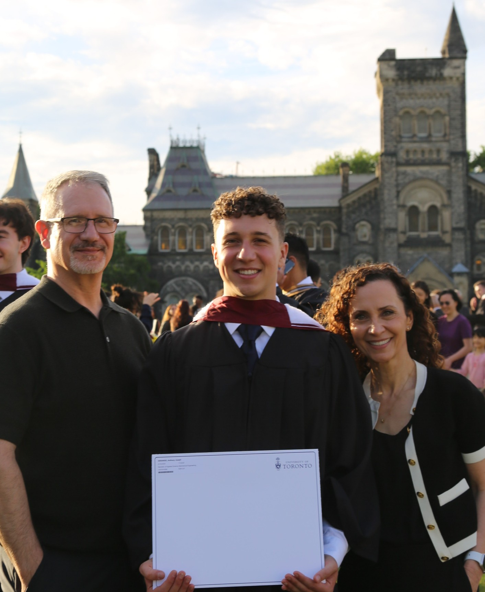

I'm a mechanical engineer from Woodbridge, Ontario, Canada, and a PhD student in Engineering Sciences at Harvard University. My research interests lie at the intersection of engineering, biology, and medicine.
I recently completed my undergraduate degree at the University of Toronto, where I worked on projects ranging from solar vehicle design to assistive technologies for animal rehabilitation. During this time, I also conducted research in fluid mechanics and biomedical engineering.
My long-term goal is to develop medical technologies that translate scientific discoveries into meaningful improvements in patient care and quality of life. I am particularly interested in implantable and ingestible systems, bioelectronic interfaces, and closed-loop technologies that can sense and modulate physiology.